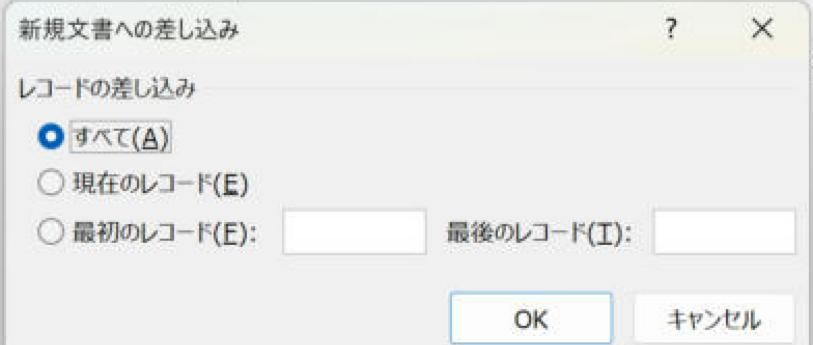

Wordラベル差し込みで全ラベルが同じ宛名になる原因と直し方
全部のラベルに同じ宛名が出るときの直し方です。ほとんどの場合、1面目を整えて反映し直すだけで直ります。
結論
原因のほとんどは、2面目以降に次の人へ進む指示がないことです。左上の1面を整えて「複数ラベルに反映」を押し直します。コードの手修正は最初の手段にしません。
やさしい（Lv.2）
- ひな形を開く
- 1面目を整える
- 反映し直す
- 順番を照合
目次
最初に試すこと
左上の1面を作り直して、「複数ラベルに反映」を押します。ラベルの機能が、次の人へ進む指示を自動で配置します。最初からフィールドコードを編集する必要はありません。
この手順は、差し込み印刷の種類に「ラベル」を選んだ文書用です。普通のレターの表には自動反映できません。
症状から確認する
| 症状 | 確認すること |
|---|---|
| 全ラベルが同じ人 | 自動反映が未実行、または2面目以降の次のレコード指示がない。 |
| 1人おきになる | 1面内で次へ進む指示が2回入っていないか。 |
| 最初の人が出ず、2人目から始まる | 1面目の先頭に次のレコード指示がないか。 |
| 空白の宛名が混ざる | Excelの空白行・対象者のチェック・フィールド名・末尾の余り面を確認。 |
| 画面の文字だけが同じ | 「«氏名»」を手入力していないか。メニューから挿入し直す。 |
手順1ひな形を開き、ラベル形式か確認する
- 差し込み後の完成文書ではなく、Excel住所録につないだひな形を開きます。念のため別名で保存します。
- 「差し込み文書」→「結果のプレビュー」がオンならオフにします。
- 「複数ラベルに反映」が使えるか確認します。
確認使えない場合はラベル形式ではありません。ラベルの基本手順で新しいひな形を作ります。
手順21面目を整えて、全体へ反映する
- 左上の1面に、郵便番号・住所・氏名を「差し込みフィールドの挿入」で配置します。
- 左上に「«Next Record»」があれば、その文字のフィールドだけを選んで削除します。氏名などのフィールドまで消さないようにします。
- 「複数ラベルに反映」を押します。2面目以降を手でコピーする必要はありません。

手順3プレビューと完成文書の両方を確認する
- 「結果のプレビュー」をオンにし、1人目・2人目・3人目が順に並ぶかをExcelと照合します。
- 「完了と差し込み」→「個々のドキュメントの編集」→「すべて」→「OK」で新しい文書を作ります。
確認先頭、ページの境目、最後を確認します。プレビューの矢印で1件ずつずらした画面は、ページ送りの結果とは別です。

参考
Microsoft：Nextフィールド。先頭に置くと最初のデータが飛ばされる仕様を確認できます。
実機で確認した内容
- 確認日：2026-11-03
- 環境：Windows版 Word 16.0
- 確認した範囲：Next Recordがないと同じ人がくり返される。2つ入れると1人飛ばされる（山田→鈴木）。先頭にも入れると2人目（佐藤）から始まる。
- 確認していないこと：紙への印刷。環境により結果が異なる場合があります。
更新履歴
- 2026-11-03：症状の表を先頭へ移動。